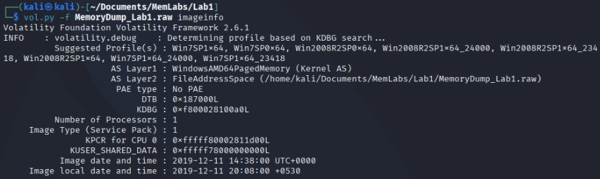
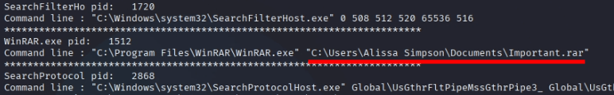
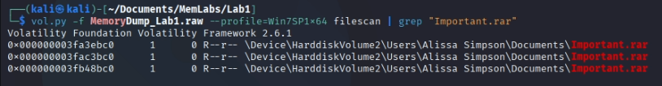
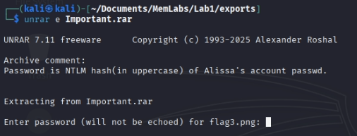
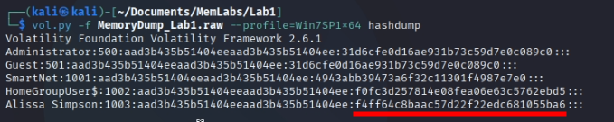
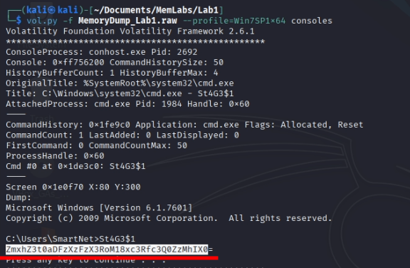
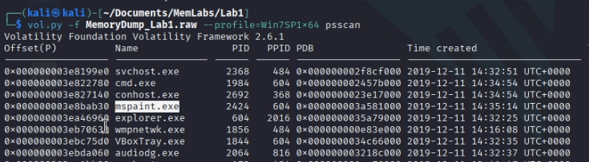
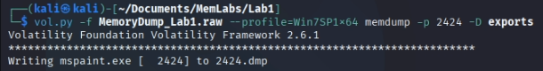
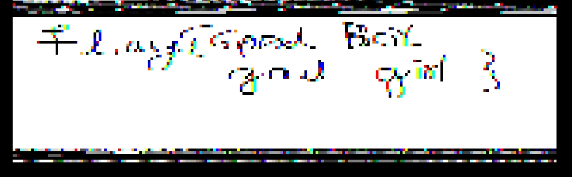

En este write-up, me adentro en los retos de MemLabs, una serie de laboratorios diseñados para poner a prueba nuestras habilidades en el análisis de volcados de memoria. Equipado con Volatility, una de las herramientas más potentes para diseccionar sistemas vivos o caídos, iré desenterrando credenciales, procesos sospechosos, conexiones de red y cualquier pista que hayan dejado atrás.
Ahora si, nos encontramos delante del primer reto del laboratiorio: MemLabs Lab 1 - Beginner's Luck. El anterior consistía en una prueba de concepto, ver si nos funciona la herramienta, si sabemos usarla, etc. Aunque este desafio esté catalogado como fácil, hay que tener en cuenta una cosa: Nada es realmente fácil, simplemente el que ha hecho los retos tiene más práctica que el resto
El ordenador de mi hermana crasheo. Tuvimos mucha suerte de poder recuperar este volcado de memoria. Tu tarea es recuperar todos sus archivos importantes del sistema. Por lo que recordamos, de repente apareció una ventana negra con algo ejecutándose. Cuando ocurrió el fallo, ella estaba intentando dibujar algo. Eso es todo lo que recordamos del momento del accidente.
Además, este reto consta de 3 flags.
Para sacar la memoria debemos usar el siguiente comando:
vol.py -f MemoryDump_Lab1.raw imageinfo
Al hacer esto, nos saldrá lo siguiente:
Yo me quedaré con el perfil Win7SP1x64, ya que es el que menos problemas me dió al principio.
Como aclaré antes, debemos buscar 3 flags que concuerdan con los puntos principales del enunciado. Así que vamos a hacer uno por uno.
Para ver los archivos cargados en memoria, debemos usar el siguiente comando:
vol.py -f MemoryDump_Lab1.raw --profile=Win7SP1x64 filescan
Esto nos devolverá un listado enorme de archivos cargados en la memoria, vamos a buscar algo con lo que poder filtrar.
Con cmdline encontramos el siguiente archivo .rar
Si tuviera otro nombre ni le haría caso en un principio, pero literalmente se llama IMPORTANTE.rar
Ahora que tenemos algo con lo que poder filtrar, vamos a ver si el archivo está realmente cargado en memoria:
Vemos que sí que está cargado, pero hay 3 archivos. Debemos extraerlos todos y ver cual es el correcto.
Para extraer los archivos, necesitaremos usar el comando dumpfiles de Volatility, indicando la ruta en memoria del archivo. Por ejemplo:
vol.py -f MemoryDump_Lab1.raw --profile=Win7SP1x64 dumpfiles -Q 0x000000003fa3ebc0 -D ./exports
Esto nos devolverá un archivo con un nombre extraño, podemos cambiarle el nombre sin problemas a "important.rar" y facilitarnos el trabajo
Os adelanto que el correcto es el primero.
Al intentar extraerlo, nos devolverá el siguiente comentario:
La contraseña del archivo es el hash NTLM del usuario "Alissa" en mayusculas.
Podemos usar el comando que vimos en el laboratiorio anterior para conseguir el hash:
Ponemos todo eso en mayusculas como la contraseña del archivo y conseguimos la tercera flag.
Debemos usar diferentes opciones de volatility que nos permitan ver información orientada a la consola de comandos.
La primera que usé fue consoles, y resultó ser la correcta
Encontramos la primera flag del reto cifrada en base64
Por último, tenemos la flag más rebuscada en mi opinión. Empecemos por buscar ese programa usado para pintar.
Podemos usar las opciones pslist/pstree o psscan. Con esta última, aparece el siguiente proceso:
Programa nativo de windows para dibujar
Ahora, debemos extraer el proceso usando memdump:
Y por último, tenemos que abrir este archivo con gimp:
No conseguí que se viese mejor
Esta flag consiste en entender como funcionan los procesos. Como estaban dibujando algo cuando crasheo el PC, en memoria se guardó información de lo que estaban haciendo, entonces, el proceso del mspaint guardó lo que estaban dibujando.
Ir al laboratorio anterior